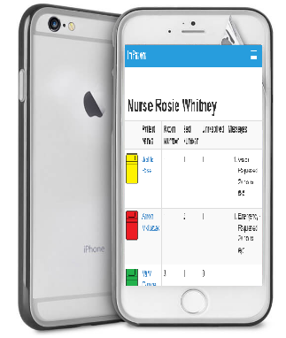
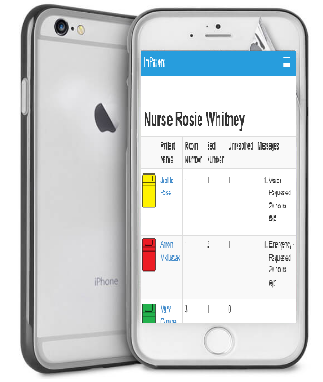
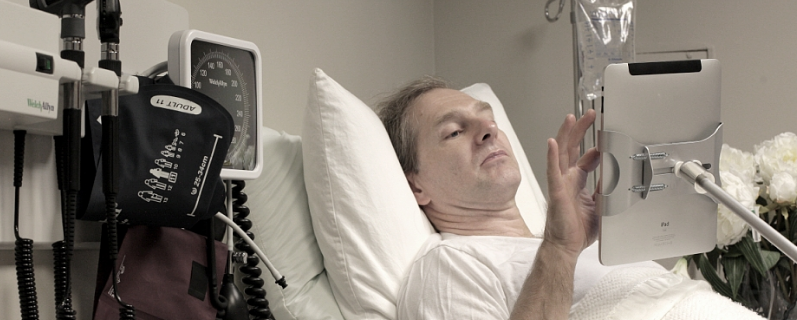
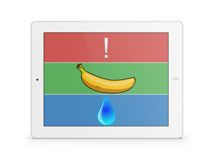

Getting alerts wherever you go
Whenever a patient sends a request, it automatically updates its assigned primary nurse's dashboard pages.
Allows nurses sending instant chats whenever there is a need.

There is other content and snippets of details or features that can be placed here..
You may also want to create content that compells users to scroll down more..
In the first 30 seconds of a user's visit to your site they decide if they're going to stay..
Whenever a patient sends a request, it automatically updates its assigned primary nurse's dashboard pages.
Allows nurses sending instant chats whenever there is a need.

Patient's iPad is customized based on the patient's abilities and needs.
